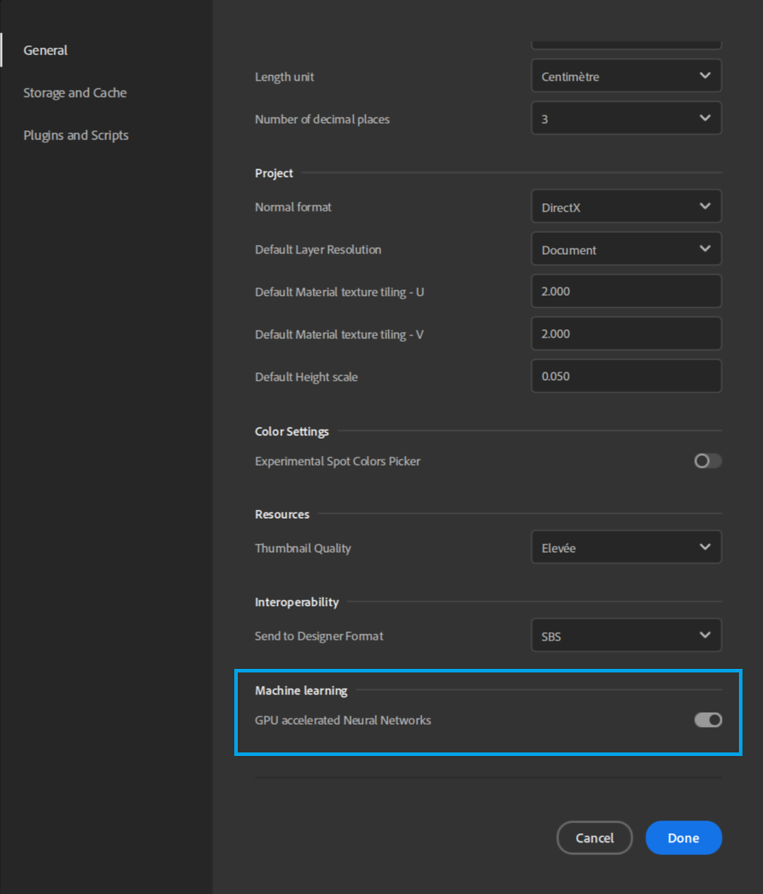

The Image to Material (AI Powered) results can sometimes be altered (wrong colors mostly).
Enable or disable the GPU accelerated Neural Networks in the Machine learning section of the Preferences of Substance 3D Sampler to solve the issue.
